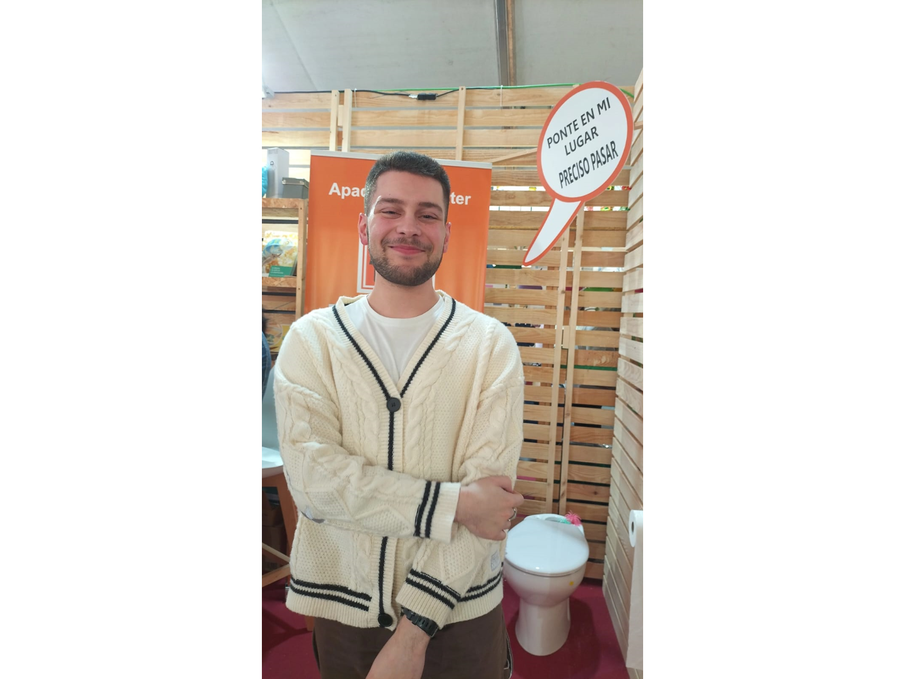
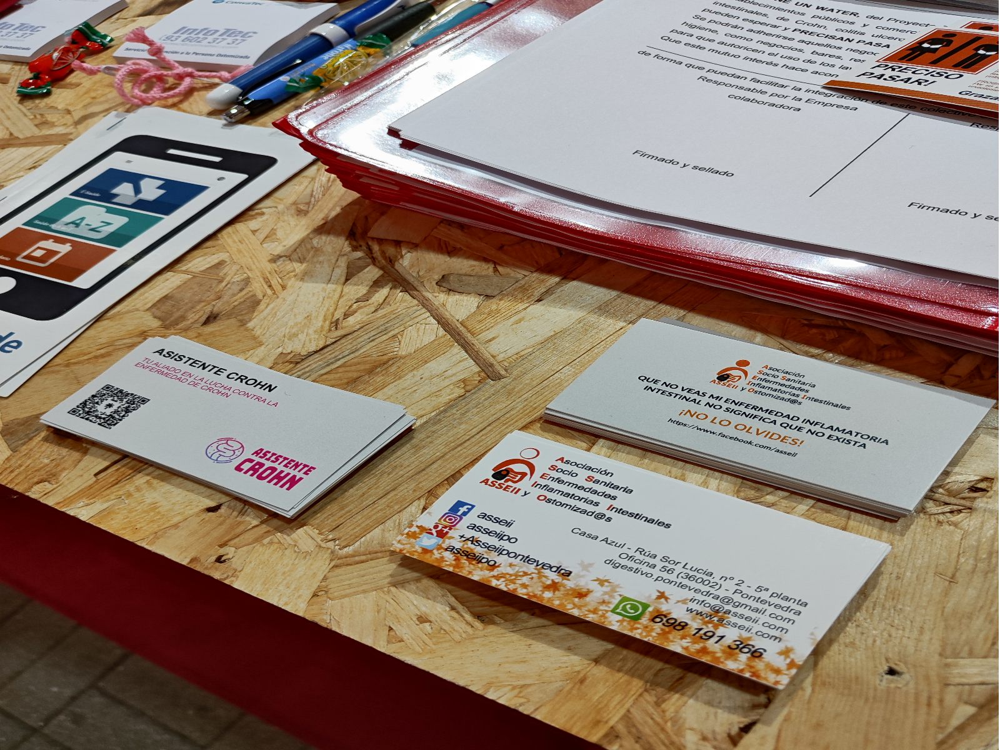
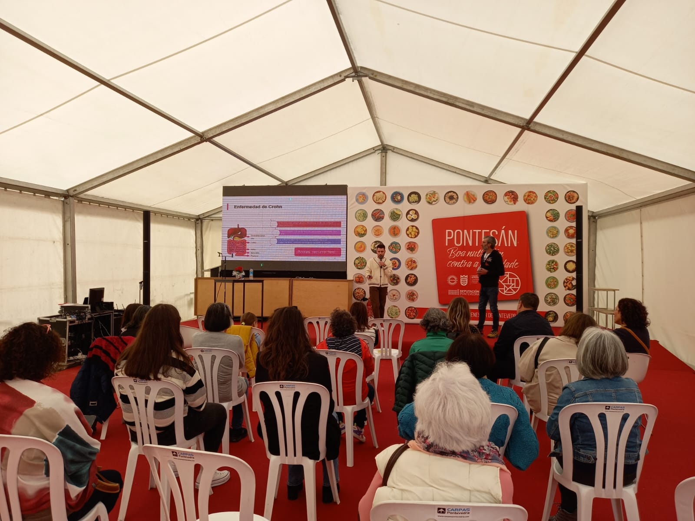
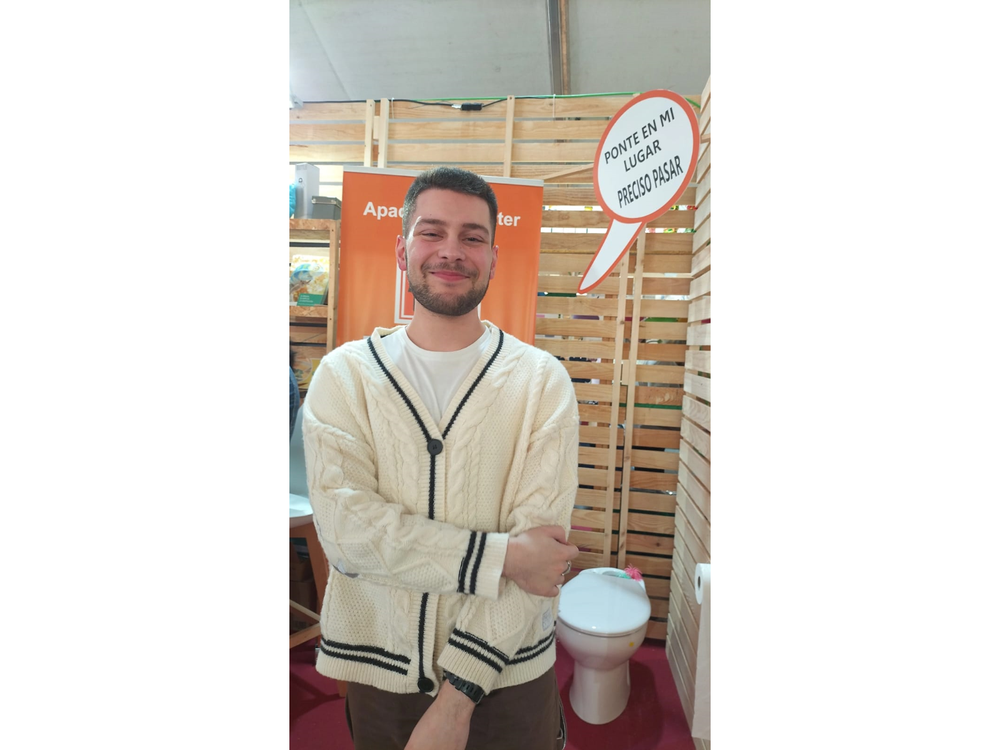
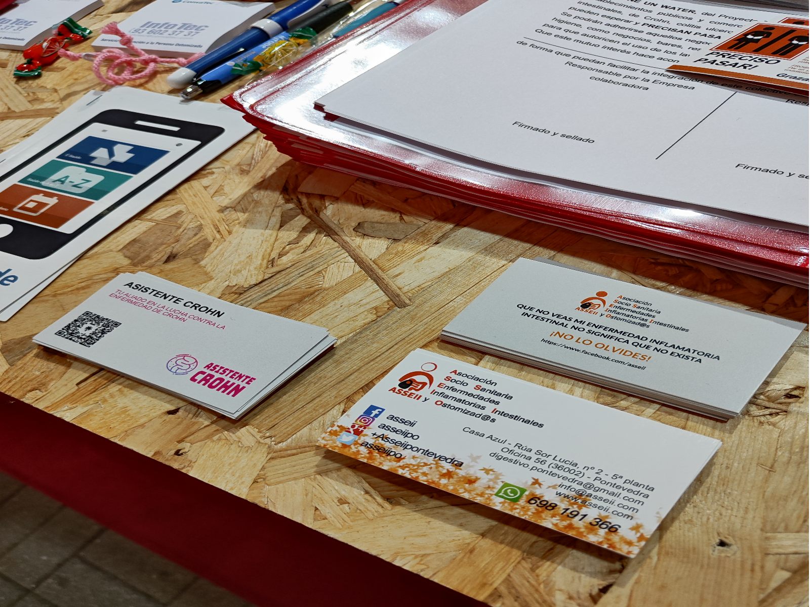
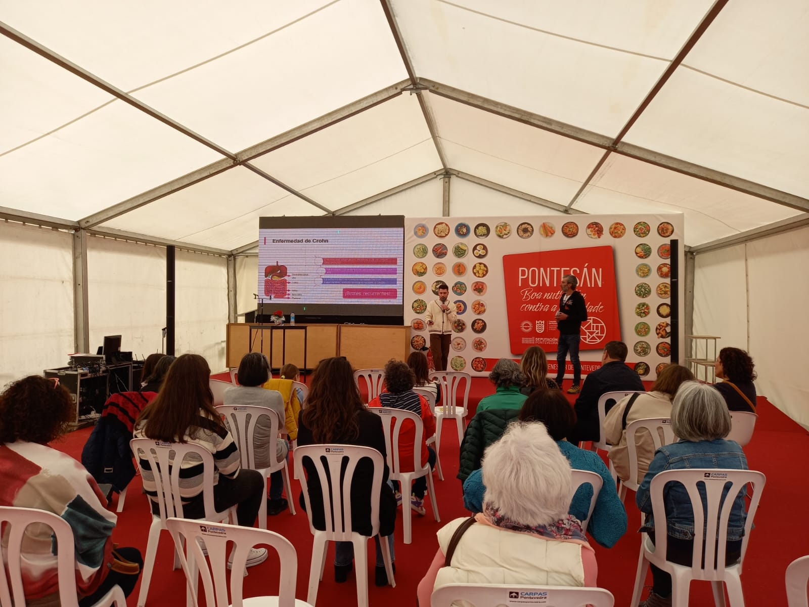

Crohn’s Assistant
Crohn’s Assistant is a mobile application for people who suffer from Crohn’s inflammatory bowel disease. The main objective of the application is to automatically identify and alert the appearance of a possible outbreak of the disease based on certain sets of symptoms referred by specialists. In addition, it provides the user with an orientative access to reference recommendations on disease management, endorsed by medical societies.
Resources
Check out the Linktree profile to access useful resources and links.
https://linktr.ee/asistentecrohnOutbreaks
This is a post about my participation in the IV Health and Wellness Fair called Pontesán in Galicia. This year’s focus was on nutrition and fighting obesity and it had over 40 non-profit entities participating. I had the honor of presenting my mobile application called Crohn’s Assistant which helps patients manage their Crohn’s inflammatory bowel disease more effectively and improve their quality of life. The app has been very well received and has received a lot of positive feedback since its launch 10 months ago, with a total of 450 downloads to date (May 2023).
 





First version of the application
The first version of Crohn’s Assistant was launched in June 2022. It included the following features:
- Symptom and medication tracking and registration.
- Medical appointment calendar.
- Information and support resources for patients.

In development version
I am currently working on the next version of Crohn’s Assistant, which will include the following improvements. As far from today (May 2023), I am finishing a public API of the new version. You can check it out at my GitHub.
- New modules and a renewed design.
- Personalized recommendations based on collected data.
- Access to your records by your IBD Unit.